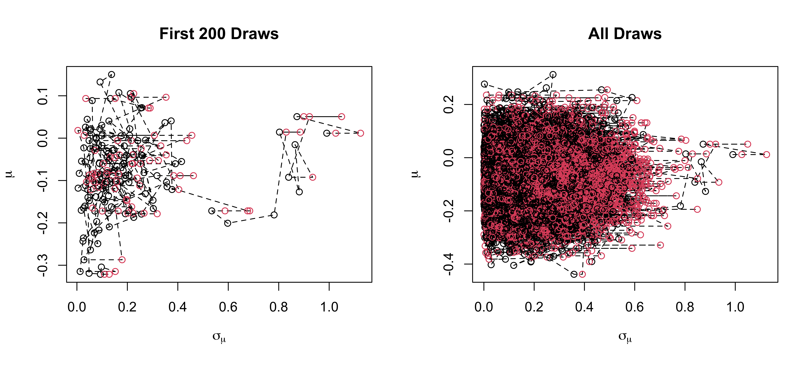
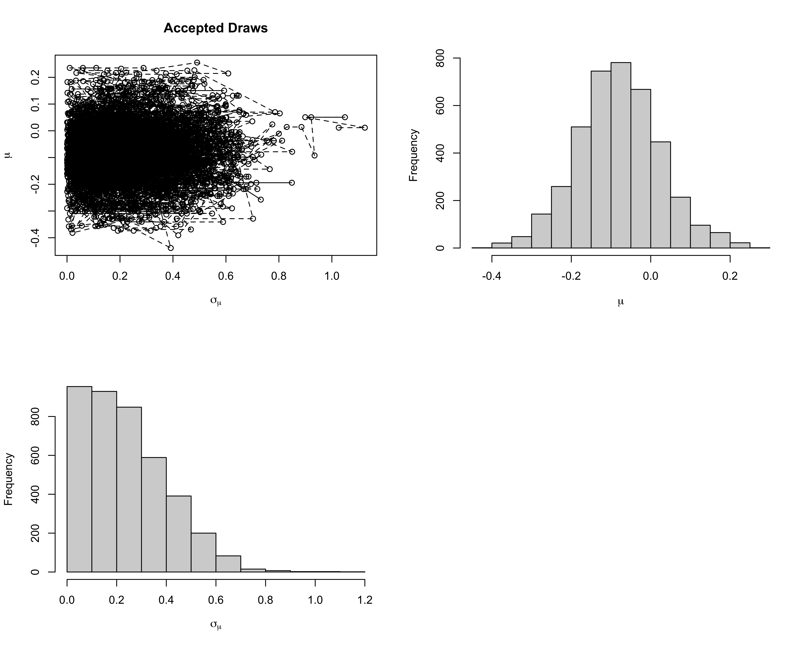
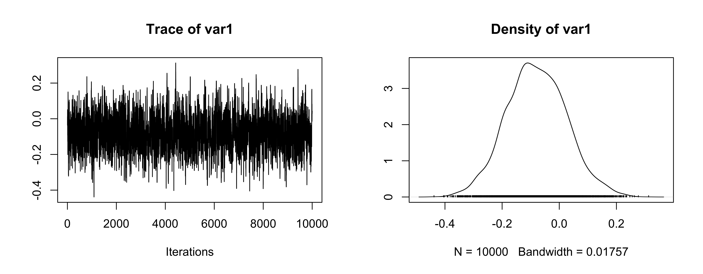
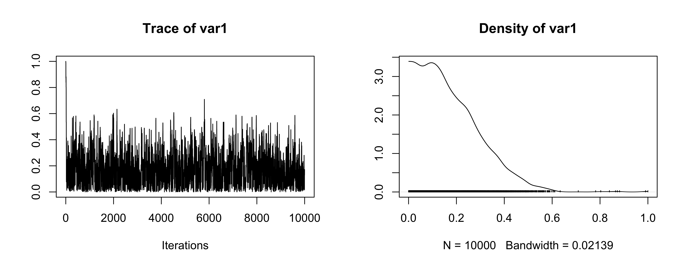
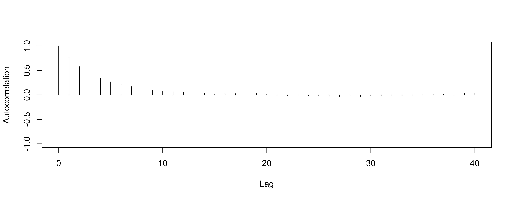
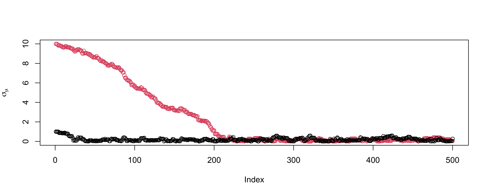

Iterations = 1:10000
Thinning interval = 1
Number of chains = 1
Sample size per chain = 10000
1. Empirical mean and standard deviation for each variable,
plus standard error of the mean:
Mean SD Naive SE Time-series SE
mu -0.07977 0.1046 0.001046 0.002839
sigma_mu 0.17550 0.1273 0.001273 0.004397
2. Quantiles for each variable:
2.5% 25% 50% 75% 97.5%
mu -0.283420 -0.1508 -0.08193 -0.00848 0.1337
sigma_mu 0.007995 0.0758 0.15024 0.25228 0.4693Lecture 6: Metropolis Algorithms and Stochastic Sampling
Merlise Clyde
Duke University
2001-09-20
Last Class: Normal Means Model
Data Model \(Y_i \mid \mu_i, \sigma^2 \overset{ind}{\sim} \textsf{N}(\mu_i, \sigma^2)\)
Means Model \(\mu_i \mid \mu, \sigma^2_\mu \overset{iid}{\sim} \textsf{N}(\mu, \sigma^2_{\mu})\)$
Found marginal likelihood \(\cal{L}(\mu, \sigma^2, \sigma^2_\mu)\) by integrating out \(\mu_i\) with respect to \(g\) \[\cal{L}(\mu, \sigma^2, \sigma^2_\mu) \propto (\sigma^2 + \sigma^2_\mu)^{-n/2} \exp \left\{ - \frac{1}{2} \frac{\sum_{i=1}^n\left(y_i - \mu \right)^2}{\sigma^2 + \sigma^2_\mu }\right\}\]
Posterior for \(\theta = \mu, \sigma^2_\mu\) with \(\sigma^2 = 1\) \[\pi(\theta \mid y) = \frac{\pi(\theta) \cal{L}(\theta)} {\int_\Theta \pi(\theta) \cal{L}(\theta) \, d\theta} = \frac{\pi(\theta) \cal{L}(\theta)} {m(y)}\]
while we can integrate out \(\mu\), no closed form for posterior of \(\sigma^2_\mu\) given \(\sigma^2\)
Important Sampling Estimate
Estimate of \(m(y)\) \[m(y) \approx \frac{1}{T} \sum_{t=1}^{T} \frac{\pi(\theta^{(t)}) \cal{L}(\theta^{(t)})}{q(\theta^{(t)})} \qquad \theta^{(t)} \sim q(\theta)\]
Ratio estimator of \(\textsf{E}[h(\theta) \mid y]\) \[\textsf{E}[h(\theta) \mid y] \approx \frac{\sum_{t=1}^{T} h(\theta^{(t)}) \frac{\pi(\theta^{(t)}) \cal{L}(\theta^{(t)})}{q(\theta^{(t)})}} { \sum_{t=1}^{T} \frac{\pi(\theta^{(t)}) \cal{L}(\theta^{(t)})}{q(\theta^{(t)})}} \qquad \theta^{(t)} \sim q(\theta)\]
Weighted average with importance weights \(w(\theta^{(t)}) \propto \frac{\pi(\theta^{(t)}) \cal{L}(\theta^{(t)})}{q(\theta^{(t)})}\) \[\textsf{E}[h(\theta) \mid y] \approx \sum_{t=1}^{T} h(\theta^{(t)}) w(\theta^{(t)})/\sum_{t=1}^T w(\theta^{(t)}) \qquad \theta^{(t)} \sim q(\theta)\]
Issues
if \(q()\) puts too little mass in regions with high posterior density, we can have some extreme weights
optimal case is that \(q()\) is as close as possible to the posterior so that all weights are constant
Estimate may have large variance
Problems with finding a good \(q()\) in high dimensions \((d > 20)\) or with skewed distributions
Markov Chain Monte Carlo (MCMC)
- Typically \(\pi(\theta)\) and \(\cal{L}(\theta)\) are easy to evaluate
Question
How do we draw samples only using evaluations of the prior and likelihood in higher dimensional settings?
construct a Markov chain \(\theta^{(t)}\) in such a way the the stationary distribution of the Markov chain is the posterior distribution \(\pi(\theta \mid y)\)! \[\theta^{(0)} \overset{k}{\longrightarrow} \theta^{(1)} \overset{k}{\longrightarrow} \theta^{(2)} \cdots\]
\(k_t(\theta^{(t-1)} ; \theta^{(t)})\) transition kernel
initial state \(\theta^{(0)}\)
choose some nice \(k_t\) such that \(\theta^{(t)} \to \pi(\theta \mid y)\) as \(t \to \infty\)
biased samples initially but get closer to the target
Metropolis Algorithm (1950’s)
Stochastic Sampling Intuition
From a sampling perspective, we need to have a large sample or group of values, \(\theta^{(1)}, \ldots, \theta^{(S)}\) from \(\pi(\theta \mid y)\) whose empirical distribution approximates \(\pi(\theta \mid y)\).
for any two sets \(A\) and \(B\), we want \[\frac{\dfrac{\# \theta^{(s)} \in A}{S}}{\dfrac{\# \theta^{(s)} \in B}{S} } = \dfrac{\# \theta^{(s)} \in A}{\# \theta^{(s)} \in B} \approx \dfrac{\pi(\theta \in A \mid y)}{\pi(\theta \in B \mid y)}\]
Suppose we have a working group \(\theta^{(1)}, \ldots, \theta^{(s)}\) at iteration \(s\), and need to add a new value \(\theta^{(s+1)}\).
Consider a candidate value \(\theta^\star\) that is close to \(\theta^{(s)}\)
Should we set \(\theta^{(s+1)} = \theta^\star\) or not?
Posterior Ratio
look at the ratio \[ \begin{split} M & = \dfrac{\pi(\theta^\star \mid y)}{\pi(\theta^{(s)} \mid y)} = \frac{\dfrac{p(y \mid \theta^\star) \pi(\theta^\star)}{p(y)} } {\dfrac{p(y \mid \theta^{(s)}) \pi(\theta^{(s)})}{p(y)}}\\ \\ & = \dfrac{p(y \mid \theta^\star) \pi(\theta^\star)}{p(y \mid \theta^{(s)}) \pi(\theta^{(s)})} \end{split} \]
- does not depend on the marginal likelihood we don’t know!
Metropolis Algorithm
- If \(M > 1\)
Intuition: \(\theta^{(s)}\) is already a part of the density we desire and the density at \(\theta^\star\) is even higher than the density at \(\theta^{(s)}\).
Action: set \(\theta^{(s+1)} = \theta^\star\)
- If \(M < 1\),
Intuition: relative frequency of values in our group \(\theta^{(1)}, \ldots, \theta^{(s)}\) “equal” to \(\theta^\star\) should be \(\approx M = \dfrac{\pi(\theta^\star \mid y)}{\pi(\theta^{(s)} \mid y)}\).
For every \(\theta^{(s)}\), include only a fraction of an instance of \(\theta^\star\).
Action: set \(\theta^{(s+1)} = \theta^\star\) with probability \(M\) and \(\theta^{(s+1)} = \theta^{(s)}\) with probability \(1-M\).
Proposal Distribution
Where should the proposed value \(\theta^\star\) come from?
Sample \(\theta^\star\) close to the current value \(\theta^{(s)}\) using a symmetric proposal distribution \(\theta^\star \sim q(\theta^\star \mid \theta^{(s)})\)
\(q()\) is actually a “family of proposal distributions”, indexed by the specific value of \(\theta^{(s)}\).
Here, symmetric means that \(q(\theta^\star \mid \theta^{(s)}) = q(\theta^{(s)} \mid \theta^\star)\).
Common choice \[\textsf{N}(\theta^\star; \theta^{(s)}, \delta^2 \Sigma)\] with \(\Sigma\) based on the approximate \(\textsf{Cov}(\theta \mid y)\) and \(\delta = 2.44/\text{dim}(\theta)\) or \[\text{Unif}(\theta^\star; \theta^{(s)} - \delta, \theta^{(s)} + \delta)\]
Metropolis Algorithm Recap
The algorithm proceeds as follows:
Given \(\theta^{(1)}, \ldots, \theta^{(s)}\), generate a candidate value \(\theta^\star \sim q(\theta^\star \mid \theta^{(s)})\).
Compute the acceptance ratio \[\begin{split} M & = \dfrac{\pi(\theta^\star \mid y)}{\pi(\theta^{(s)} \mid y)} = \dfrac{p(y \mid \theta^\star) \pi(\theta^\star)}{p(y \mid \theta^{(s)}) \pi(\theta^{(s)})}. \end{split}\]
Set \[\begin{eqnarray*} \theta^{(s+1)} = \left\{ \begin{array}{ll} \theta^\star & \quad \text{with probability} \quad \text{min}(M,1) \\ \theta^{(s)} & \quad \text{with probability} \quad 1 - \text{min}(M,1) \\ \end{array} \right. \end{eqnarray*}\] equivalent to sampling \(u \sim U(0,1)\) independently and setting \[\begin{eqnarray*} \theta^{(s+1)} = \left\{ \begin{array}{ll} \theta^\star & \quad \text{if} \quad u < M \\ \theta^{(s)} & \quad \text{if} \quad \text{otherwise} \\ \end{array} \right. . \end{eqnarray*} \]
Notes
Acceptance probability is \[M = \min \left\{ 1, \frac{\pi(\theta^\star) \cal{L}(\theta^\star)} {\pi(\theta^{(s)}) \cal{L}(\theta^{(s)})}\right\}\]
ratio of posterior densities where normalizing constant cancels!
The Metropolis chain ALWAYS moves to the proposed \(\theta^\star\) at iteration \(s+1\) if \(\theta^\star\) has higher target density than the current \(\theta^{(s)}\).
Sometimes, it also moves to a \(\theta^\star\) value with lower density in proportion to the density value itself.
This leads to a random, Markov process that naturally explores the space according to the probability defined by \(\pi(\theta \mid y)\), and hence generates a sequence that, while dependent, eventually represents draws from \(\pi(\theta \mid y)\) (stationary distribution of the Markov Chain).
Summarizing Samples
Once we obtain the samples, then we are back to using Monte Carlo approximations for quantities of interest!
we can approximate posterior means, quantiles, and other quantities of interest using the empirical distribution of our sampled values.
easy to compute the posterior distribution of nonlinear functions of parameters! \[\psi^{(s)} = g(\theta^{(s)})\]
some posterior summaries are hard to calculate based on samples \(\{ \theta^{(s)}\}\)
mode/MAP (at least for continuous)
marginal likelihood \(m(y) = \int \pi(\theta) p(y \mid \theta)\, d\theta\)
Convergence
We will not cover the convergence theory behind Metropolis chains in detail, but …
The Markov process generated under this procedure is ergodic (irreducible and aperiodic) and has a unique limiting distribution (stationary distribution)
- ergodicity means that the chain can move anywhere at each step, which is ensured, if \(q(\theta^\star \mid \theta^{(s)}) > 0\) everywhere!
By construction, Metropolis chains are reversible, so that \(\pi(\theta \mid y)\) is the stationary distribution
Think of reversibility as being equivalent to symmetry of the joint density of two consecutive \(\theta^{(s)}\) and \(\theta^{(s+1)}\) in the stationary process (which we get by using a symmetric proposal distribution)
detailed balance
Example
Priors with \(\sigma^2 = 1\): \[p(\mu) \propto 1\]
Use a \(\textsf{Cauchy}(0,1)\) prior on \(\sigma_\mu\) independent of \(\mu\) and
Symmetric proposal for \(\mu\) and \(\sigma_\tau\)?
Try independent normals \(\frac{2.44^2}{d} \textsf{Cov}(\theta)\) where \(d\) is the dimension of \(\theta\) (d = 2)
Samples
Overall Acceptance probability is 0.6 out of 10^{4} samples
Goal is around 0.44 in 1 dimension to 0.23 in higher dimensions
Tuning
Sampled values are correlated
Correlation between samples can be adjusted by selecting an optimal \(\delta\) (i.e., spread of the distribution) in the proposal distribution
\(\delta\) too small leads to \(M \approx 1\) for most proposed values, a high acceptance rate, but very small moves, leading to highly correlated chain.
\(\delta\) too large can get “stuck” because \(\theta^\star\) may be very far away from high density regions, leading to a very low acceptance rate and again high correlation in the Markov chain.
Burn-in and thinning can help!
Burn-in
Convergence occurs regardless of our starting point (in theory), so we can usually pick any reasonable values in the parameter space as a starting point.
May take a long time to reach high density regions
Over representation of low density samples given finite iterations
Generally, we throw out a certain number of the first draws, known as the burn-in, as an attempt to make our draws closer to the stationary distribution and less dependent on any single set of starting values.
However, we don’t know exactly when convergence occurs, so it is not always clear how much burn-in we would need.
If you run long enough you should not need to discard any samples! (ergodicity)
Example
Convergence diagnostics
Diagnostics available to help decide on number of burn-in & collected samples.
Note: no definitive tests of convergence but you should do as many diagnostics as you can, on all parameters in your model.
With “experience”, visual inspection of trace plots perhaps most useful approach.
There are a number of useful automated tests in R.
CAUTION: diagnostics cannot guarantee that a chain has converged, but they can indicate it has not converged.
Diagnostics in R
The most popular package for MCMC diagnostics in R is
coda.codauses a special MCMC format so you must always convert your posterior matrix into an MCMC object.For the example, we have the following in R.
Diagnostics in R
The naive SE is the standard error of the mean, which captures simulation error of the mean rather than the posterior uncertainty.
The time-series SE adjusts the naive SE for autocorrelation.
Effective sample size.
The effective sample size translates the number of MCMC samples \(S\) into an equivalent number of independent samples.
It is defined as \[\textrm{ESS} = \dfrac{S}{1 + 2 \sum_k \rho_k},\]
\(S\) is the sample size and \(\rho_k\) is the lag \(k\) autocorrelation.
For our data, we have
Trace plot for mean
Trace plot for \(\sigma_\mu\)
OK (be careful of scaling in plots!)
Autocorrelation
Another way to evaluate convergence is to look at the autocorrelation between draws of our Markov chain.
The lag \(k\) autocorrelation, \(\rho_k\), is the correlation between each draw and its \(k\)th lag, defined as \[\rho_k = \dfrac{\sum_{s=1}^{S-k}(\theta_s - \bar{\theta})(\theta_{s+k} - \bar{\theta})}{\sum_{s=1}^{S-k}(\theta_s - \bar{\theta})^2}\]
We expect the autocorrelation to decrease as \(k\) increases.
If autocorrelation remains high as \(k\) increases, we have slow mixing due to the inability of the sampler to move around the space well.
Autocorrelation for mean
So-So
Autocorrelation for variance
worse
Gelman-Rubin
Gelman & Rubin suggested a diagnostic \(R\) based on taking separate chains with dispersed initial values to test convergence
Gelman-Rubin Diagnostic
Run m > 2 chains of length 2S from overdispersed starting values.
Discard the first S draws in each chain.
Calculate the pooled within-chain variance \(W\) and between-chain variance \(B\). \[R = \frac{\frac{S-1}{S} W + \frac{1}{S} B }{W}\]
numerator and denominator are both unbiased estimates of the variance if the two chains have converged
- otherwise \(W\) is an underestimate (hasn’t explored enough)
- numerator will overestimate as \(B\) is too large (overdispersed starting points)
As \(S \to \infty\) and \(B \to 0\), \(R \to 1\)
version in
Ris slightly different
Gelman-Rubin Diagnostic
Potential scale reduction factors:
Point est. Upper C.I.
mu 1 1
sigma_mu 1 1
Multivariate psrf
1Values of \(R > 1.1\) suggest lack of convergence
Looks OK
See also
gelman.plot
Geweke statistic
Geweke proposed taking two non-overlapping parts of a single Markov chain (usually the first 10% and the last 50%) and comparing the mean of both parts, using a difference of means test
The null hypothesis would be that the two parts of the chain are from the same distribution.
The test statistic is a z-score with standard errors adjusted for autocorrelation, and if the p-value is significant for a variable, you need more draws.
Output in R is the Z score
Geweke Diagnostic
- The output is the z-score itself (not the p-value).
Practical advice on diagnostics
There are more tests we can use: Raftery and Lewis diagnostic, Heidelberger and Welch, etc.
The Gelman-Rubin approach is quite appealing in using multiple chains
Geweke (and Heidelberger and Welch) sometimes reject even when the trace plots look good.
Overly sensitive to minor departures from stationarity that do not impact inferences.
Most common method of assessing convergence is visual examination of trace plots.
Improving
more iterations and multiple chains
thinning to reduce correlations and increase ESS e.g. if autocorrelation drops to near zero at say lag 5, keep every 5th draw
change the proposal distribution \(q\)